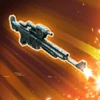
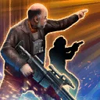

Captain Carson Teva
Vigilant pilot who inspires allies to strike back with devastating counterattacks
Vigilant pilot who inspires allies to strike back with devastating counterattacks

Deal Physical damage to target enemy and gain Retribution for 1 turn. During Captain Carson Teva's turn, all other New Republic allies gain Retribution for 1 turn. During enemy turns, attack again (max 2 attacks).

Deal Physical damage to the target enemy 3 times. Call other target ally to assist.
Inflict cumulative debuffs based on critical hits scored:
1+: Offense Down for 1 turn
2+: Defense Down for 1 turn
3+: Speed Down for 1 turn
At the start of battle, New Republic allies gain 50% Accuracy and Critical Damage. If there is an allied New Republic Galactic Legend or there are no other Galactic Legends in the battle, whenever a New Republic ally counterattacks, inflict the target enemy with a stack of On the Run (stacking, max 10).
Whenever a New Republic ally uses a Special ability, all other New Republic allies gain Retribution for 1 turn. Whenever New Republic ally resists a debuff, they gain 100% Potency for 1 turn.
Whenever any New Republic ally counterattacks, that ally deals 50% more damage. Whenever another New Republic ally counterattacks, they gain 10% Offense (stacking, max 50%) until the end of encounter and gain Defense Penetration Up for 1 turn. Whenever an ally counterattacks, that enemy is Exposed for 1 turn.
Omicron Boost : While in Territory Battles: Rebel allies gain 50% Max Health. If all allies are New Republic, they gain 100% Max Health and Max Protection until the end of battle, and 50% Defense Penetration and Offense for 2 turns; at the start of each encounter, New Republic Tank allies gain Foresight until the end of the encounter; New Republic allies are immune to Daze for 2 turns; whenever an enemy recovers Health or Protection, they are inflicted with Healing Immunity for 2 turns, which can't be resisted; whenever a New Republic ally attacks out of turn, they deal 100% more damage, the attack can't be evaded, inflict the target enemy with a stack of On the Run, and call a random New Republic ally to assist; whenever an enemy gains 5 stacks of On the Run, reset the cooldown of Keeping the Peace;
The first time each New Republic ally falls below 50% Health, they gain Damage Immunity for 1 turn; whenever a New Republic ally defeats an enemy, inflict Deathmark on the strongest enemy for 2 turns, which can't be resisted, and Expose all other enemies for 2 turns
At the start of each encounter, all New Republic Tank allies gain Retribution for 1 turn, which can't be dispelled. Teva gains 30% Max Health, Max Protection, and Offense. Whenever a New Republic ally is inflicted with a debuff, inflict Critical Chance Down and Potency Down on all enemies that didn't already have it for 1 turn, also inflict Accuracy Down on all Empire enemies that didn't already have it for 1 turn (limit once per turn).
At the start of each enemy's turn (excluding Galactic Legends), if they have 300 Speed more than Carson Teva, they are inflicted with Speed Down for 1 turn, which can't be resisted. Whenever a New Republic ally gains Advantage, all New Republic allies gain 5% Critical Chance and Critical Damage (stacking, max 100%) until the end of battle.
Whenever R5-D4 uses a Special ability, reduce the cooldown of Keeping the Peace by 1. Whenever an ally uses a Special ability on an enemy with at least one stack of On the Run, they gain Advantage. If there is an allied New Republic Galactic Legend or there are no other Galactic Legends in the battle, whenever a New Republic ally evades, inflict target enemy with a stack of On the Run (stacking, max 10).